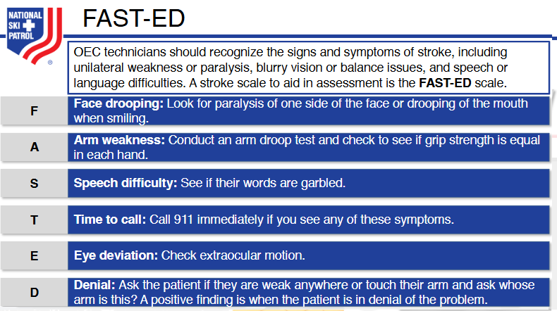
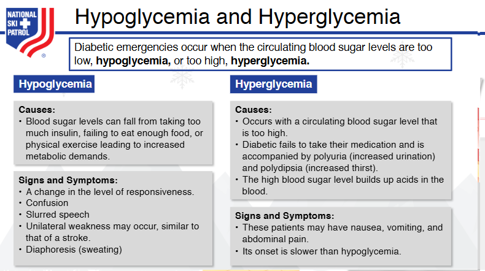
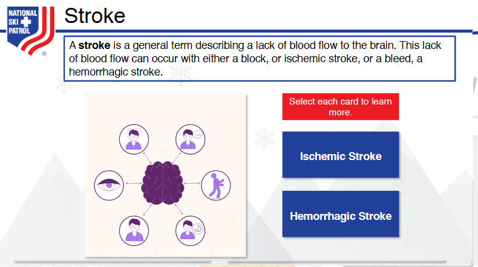
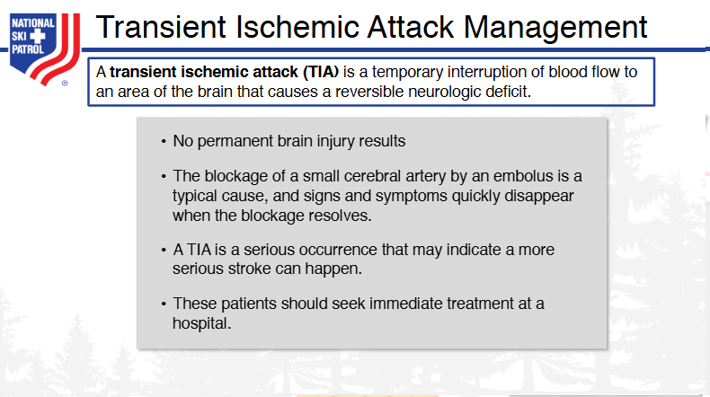
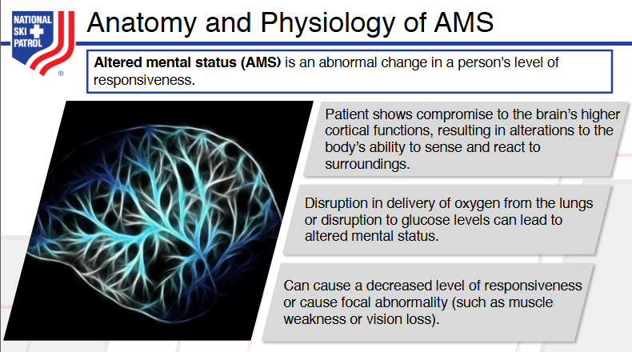
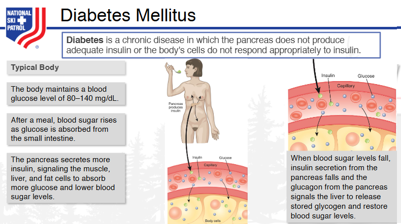
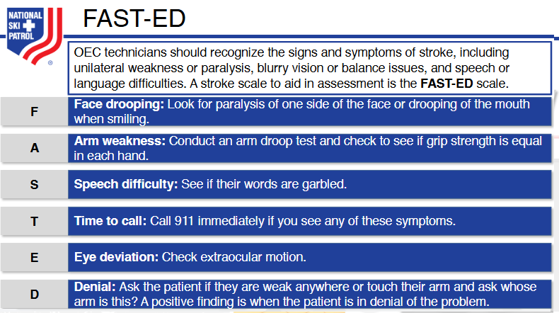
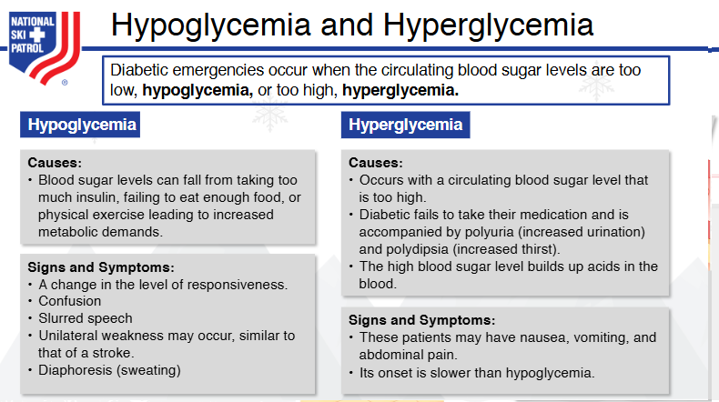
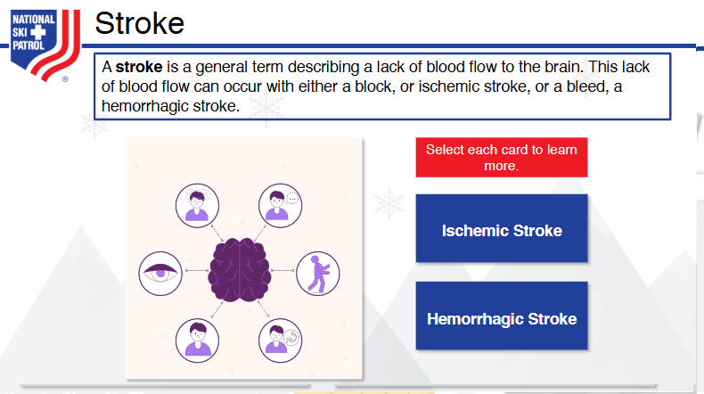
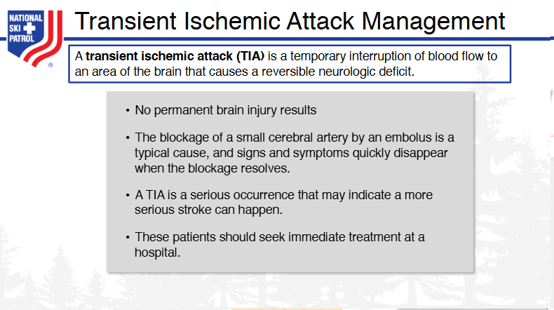

Module Objectives After participating in this module, subsequent skills component, and book reading, you should be able to:
Altered mental status (AMS) is a broad medical term that refers to a change in a person's cognitive function or consciousness. This can manifest as confusion, disorientation, lethargy, agitation, or unconsciousness. AMS can be caused by various factors, including infections, head injuries, metabolic imbalances, medications, or neurological conditions such as stroke or dementia. Identifying the underlying cause of altered mental status is critical for proper treatment. It is often considered a medical emergency, especially if the change in mental status is sudden or severe.
The mnemonic AEIOU-TIPS is commonly used to remember the causes of altered mental status (AMS). Each letter stands for a category of conditions that can lead to AMS:
This mnemonic helps healthcare professionals quickly assess the broad range of possible causes of altered mental status during diagnosis.
A Transient Ischemic Attack (TIA), also known as a mini-stroke, occurs when there is a temporary reduction of blood flow to the brain, often due to a blood clot. Unlike a full stroke, the blockage in TIA is brief, and the symptoms usually resolve within minutes to hours, without causing permanent brain damage. However, a TIA is a warning sign for a potential future stroke and requires immediate medical attention.
The symptoms of TIA are often similar to those of a full stroke but are temporary, usually lasting less than 24 hours, and fully resolve without causing permanent damage.
Call 911 or the emergency services in your area for urgent medical evaluation.
Assess ABCs (Airway, Breathing, Circulation):
If there is any sign of compromise in breathing or consciousness, begin basic life support (BLS) until help arrives.
Monitor Symptoms:
Once the patient reaches a medical facility, the healthcare team will:
Carotid ultrasound or echocardiogram may be done to check for blockages or clots in blood vessels.
Administer Medications:
Blood pressure management: If high blood pressure is a factor, medication may be given to control it.
Lifestyle Modifications:
The patient will likely be advised to adopt a heart-healthy lifestyle:
Surgical Interventions (if necessary):
Call emergency services.
Hospital Treatment:
Address underlying risk factors (e.g., high blood pressure, cholesterol).
Post-Hospital:
A TIA is an urgent medical condition, and timely intervention can prevent a full stroke. Early recognition and immediate medical care, including imaging, medication, and lifestyle modifications, play crucial roles in managing a transient ischemic attack.
Focal seizures (also known as partial seizures) affect only one area of the brain and may present in different ways depending on the area involved. They are often categorized into focal aware and focal impaired awareness seizures.
Generalized seizures affect both sides of the brain and typically result in loss of consciousness. There are various types of generalized seizures:
Hypoglycemia (low blood sugar) occurs when blood glucose levels drop below normal, usually below 70 mg/dL.
Hyperglycemia (high blood sugar) occurs when blood glucose levels rise above 180 mg/dL. It often affects people with diabetes.
These symptoms are key indicators that help in differentiating between various medical emergencies and understanding the underlying conditions. Immediate medical attention is crucial, especially in severe cases.
Assessing a patient with altered mental status (AMS) involves a systematic evaluation to identify the underlying cause. AMS can be caused by various conditions, from neurological events like strokes to metabolic disturbances like hypoglycemia. The assessment requires a detailed history, physical examination, and sometimes diagnostic tests.
Glasgow Coma Scale (GCS): This scale assesses eye opening, verbal response, and motor response to quantify the level of consciousness. The total score ranges from 3 (deep unconsciousness) to 15 (fully alert).
Pupil Check (PERRL): Assess the Pupils for Equal, Round, Reactive to Light to identify possible neurological causes (e.g., stroke, brain injury).
Cranial Nerve Examination: Check cranial nerves, especially if the patient has focal neurological symptoms (e.g., facial droop, difficulty speaking).
Motor and Sensory Function: Check for strength, coordination, and sensation. Focal weakness or sensory loss may suggest stroke or a brain lesion.
Blood Glucose Levels: Check for hypoglycemia or hyperglycemia. A rapid glucose check should be performed to rule out a diabetic emergency.
Electrolytes and Metabolic Panel: Assess for electrolyte imbalances, renal function, or liver function that may be contributing to AMS.
Toxicology Screen: If drug overdose or poisoning is suspected, a tox screen can identify substances in the blood or urine.
CT Scan or MRI: For patients with suspected stroke, head injury, or brain tumor, imaging studies are necessary to visualize the brain and rule out structural abnormalities.
Lumbar Puncture: If there is suspicion of meningitis or encephalitis, a lumbar puncture may be required to analyze cerebrospinal fluid.
Evaluating a patient with altered mental status requires a structured approach that includes primary assessments for immediate life-threatening conditions, detailed history-taking, and a full physical and neurological examination. This approach allows for the identification of the underlying cause and ensures timely treatment, which is crucial for improving outcomes.
FAST-ED is an acronym used to assess and identify large vessel occlusion (LVO) strokes, which are a type of ischemic stroke where a large artery in the brain becomes blocked. This quick assessment tool builds upon the standard FAST method (Face, Arms, Speech, Time) and adds additional components to evaluate stroke severity and the potential for a large vessel occlusion, which requires urgent intervention.
The FAST-ED score is a more sensitive tool for detecting strokes caused by large vessel occlusions, which are often more severe and require advanced treatments like thrombectomy. Healthcare providers, paramedics, and emergency responders can use FAST-ED in the field or upon initial contact with the patient to assess whether the patient might benefit from immediate specialized stroke care, such as transfer to a comprehensive stroke center.
Each symptom (Face drooping, Arm weakness, Speech difficulty, Eye deviation, Denial/Neglect) adds to the FAST-ED score, helping to predict the severity and type of stroke. A higher score indicates a greater likelihood of a large vessel occlusion, which typically requires urgent endovascular treatment.
By quickly identifying these signs, FAST-ED can lead to more efficient triage and timely treatment, improving the chances of recovery and reducing the risk of long-term disability following a stroke.
Stroke management differs based on the type of stroke: ischemic stroke, which is caused by a blockage in a blood vessel supplying the brain, and hemorrhagic stroke, which results from bleeding in or around the brain. Each type of stroke requires specific treatment to minimize damage to the brain and improve recovery outcomes. Below is a detailed breakdown of how each type is managed.
Description: An ischemic stroke occurs when a blood clot blocks a blood vessel in the brain, cutting off blood supply to a region of the brain. This type accounts for about 85% of all strokes.
If a stroke is suspected, call 911 immediately. Early intervention is critical.
Assess the Patient Using FAST:
Use the FAST acronym to quickly assess the patient's condition (Face drooping, Arm weakness, Speech difficulty, Time to call emergency services).
Hospital Care:
Patients are typically prescribed antiplatelet medications (e.g., aspirin, clopidogrel) to prevent further clot formation.
Blood Pressure Management:
Hypertension control is crucial in preventing recurrent strokes. Medication is often prescribed to manage high blood pressure.
Statins:
Statins may be given to lower cholesterol levels, particularly if the stroke is linked to atherosclerosis (plaque buildup in the arteries).
Lifestyle Modifications:
Description: A hemorrhagic stroke occurs when a blood vessel in the brain bursts, causing bleeding into or around the brain. This type accounts for about 15% of all strokes but tends to be more fatal.
As with ischemic strokes, time is critical, and emergency services should be called immediately.
Initial Assessment and Imaging:
A CT scan or MRI is used to confirm the presence of bleeding and the location of the hemorrhage.
Control of Bleeding:
In some cases, the patient may require a craniotomy, a surgical procedure to relieve pressure in the brain by removing a section of the skull to access and repair the bleeding vessel or remove a clot.
Aneurysm Clipping or Coiling:
Patients are often monitored in an ICU to manage intracranial pressure and prevent further complications.
Rehabilitation:
Both types of stroke require urgent medical intervention, but the treatment strategies differ significantly depending on whether the stroke is ischemic or hemorrhagic. Early diagnosis through imaging, coupled with timely treatment, can significantly improve patient outcomes.
The treatment of a patient with altered mental status (AMS) involves a systematic approach to ensure patient safety, identify the underlying cause, and provide timely medical intervention. Here is a step-by-step demonstration of how to treat a patient with AMS:
Circulation: Check pulse and blood pressure. If the patient is in shock (e.g., due to sepsis or hypovolemia), administer intravenous fluids or start resuscitation as necessary.
Assess Level of Consciousness:
Look for focal neurological deficits (e.g., weakness, facial droop, slurred speech) that could indicate stroke or other central nervous system pathology.
Check for Trauma or Infection:
If hypoglycemia is suspected, perform a fingerstick glucose test. If blood sugar is low (<70 mg/dL), administer glucose (oral glucose, IV dextrose, or glucagon if the patient is unconscious).
Electrolytes and Blood Chemistry:
Obtain blood samples for electrolytes, renal function, and liver function tests to assess metabolic causes (e.g., hyponatremia, uremia).
Toxicology Screen:
If overdose or poisoning is suspected, order a toxicology screen for common drugs (e.g., opioids, benzodiazepines).
Imaging Studies:
Administer IV dextrose (D50) or glucagon for severe hypoglycemia. Reassess blood glucose levels frequently.
Opioid Overdose:
Administer naloxone (Narcan) if opioid overdose is suspected. This may rapidly reverse the effects of opioids and restore normal consciousness.
Seizures:
If the patient is actively seizing, administer benzodiazepines (e.g., lorazepam or diazepam) to stop the seizure activity.
Thiamine:
Administer thiamine if Wernicke's encephalopathy (often related to chronic alcoholism) is suspected.
Stroke:
A 62-year-old male presents to the emergency room with confusion and disorientation. The initial assessment shows the patient is responsive to verbal stimuli, has a GCS of 13, and low blood pressure. A rapid blood glucose check reveals hypoglycemia (glucose of 48 mg/dL), so 50 mL of IV dextrose is administered. After 5 minutes, the patient’s mental status improves. The patient is closely monitored for changes, and additional blood work is sent to assess electrolyte imbalances. A CT scan rules out acute stroke.
Managing a patient with altered mental status requires a systematic and comprehensive approach. The priorities are to stabilize the patient, identify the underlying cause through a thorough history and physical examination, and administer appropriate treatments based on the cause (e.g., glucose for hypoglycemia, naloxone for opioid overdose, tPA for ischemic stroke). Ongoing monitoring and reassessment are critical to ensure the patient’s condition does not worsen.
Sources: - Mayo Clinic: Altered Mental Status Causes - UpToDate: Management of Acute Stroke Term Definition Absence Seizure A type of seizure involving brief, sudden lapses in attention or consciousness, typically lasting only a few seconds. Altered Mental Status A broad term referring to changes in consciousness, cognition, or awareness, ranging from confusion to coma. Aura A sensory warning that often precedes a seizure, such as a strange smell, taste, or visual disturbance. Clonic Activity Repetitive, jerking muscle movements seen during certain types of seizures. Coma A prolonged state of unconsciousness in which a person cannot be awakened and does not respond to stimuli. Delirium A sudden and severe confusion that is often temporary, marked by disorientation, hallucinations, and agitation. Dementia A chronic or progressive decline in cognitive function, affecting memory, thinking, and behavior. Diabetes Mellitus A metabolic disorder characterized by high blood glucose levels due to insufficient insulin production or action. Epilepsy A neurological disorder characterized by recurrent seizures resulting from abnormal electrical activity in the brain. Generalized Seizure A type of seizure that affects both hemispheres of the brain, leading to a loss of consciousness and convulsions. Glucose A simple sugar that is the primary energy source for the body’s cells, often referred to as blood sugar. Hyperglycemia A condition in which blood glucose levels are elevated, commonly seen in diabetes. Hypoglycemia A condition in which blood glucose levels are too low, potentially leading to confusion, seizures, or unconsciousness. Insulin A hormone produced by the pancreas that regulates blood glucose levels by allowing cells to absorb sugar. Polydipsia Excessive thirst, often associated with diabetes mellitus and other conditions that cause fluid loss. Polyuria Excessive urination, frequently seen in diabetes as a result of high blood glucose levels. Seizure A sudden burst of electrical activity in the brain that can cause convulsions, loss of consciousness, or unusual sensations. Stroke A condition in which the blood supply to a part of the brain is interrupted or reduced, causing brain cell death and neurological deficits. Tonic Activity Sustained muscle contractions, often seen during the tonic phase of a seizure, leading to stiffness and rigidity.## Key Terms 1. Absence Seizure - A type of seizure involving brief, sudden lapses in attention or consciousness, typically lasting only a few seconds. 2. Altered Mental Status - A broad term referring to changes in consciousness, cognition, or awareness, ranging from confusion to coma. 3. Aura - A sensory warning that often precedes a seizure, such as a strange smell, taste, or visual disturbance. 4. Clonic Activity - Repetitive, jerking muscle movements seen during certain types of seizures. 5. Coma - A prolonged state of unconsciousness in which a person cannot be awakened and does not respond to stimuli. 6. Delirium - A sudden and severe confusion that is often temporary, marked by disorientation, hallucinations, and agitation. 7. Dementia - A chronic or progressive decline in cognitive function, affecting memory, thinking, and behavior. 8. Diabetes Mellitus - A metabolic disorder characterized by high blood glucose levels due to insufficient insulin production or action. 9. Epilepsy - A neurological disorder characterized by recurrent seizures resulting from abnormal electrical activity in the brain. 10. Generalized Seizure - A type of seizure that affects both hemispheres of the brain, leading to a loss of consciousness and convulsions. 11. Glucose - A simple sugar that is the primary energy source for the body’s cells, often referred to as blood sugar. 12. Hyperglycemia - A condition in which blood glucose levels are elevated, commonly seen in diabetes. 13. Hypoglycemia - A condition in which blood glucose levels are too low, potentially leading to confusion, seizures, or unconsciousness. 14. Insulin - A hormone produced by the pancreas that regulates blood glucose levels by allowing cells to absorb sugar. 15. Polydipsia - Excessive thirst, often associated with diabetes mellitus and other conditions that cause fluid loss. 16. Polyuria - Excessive urination, frequently seen in diabetes as a result of high blood glucose levels. 17. Seizure - A sudden burst of electrical activity in the brain that can cause convulsions, loss of consciousness, or unusual sensations. 18. Stroke - A condition in which the blood supply to a part of the brain is interrupted or reduced, causing brain cell death and neurological deficits. 19. Tonic Activity - Sustained muscle contractions, often seen during the tonic phase of a seizure, leading to stiffness and rigidity.
The goal of this solution is to Jump Start your development and have you up and running in 30 minutes.
To get started with the Nsp Oec Training Chapter 11 solution repository, follow these steps: 1. Clone the repository to your local machine. 2. Install the required dependencies listed at the top of the notebook. 3. Explore the example code provided in the repository and experiment. 4. Run the notebook and make it your own - EASY !




